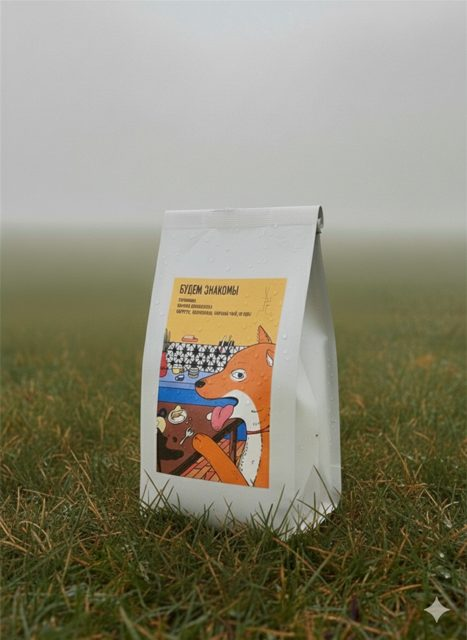

Эфиопия Буле Хора
Мытая обработка
200 г
Вкус:
Помол:
850₽
Я работал бариста. Зерно в пачках стояло в зале, но его почти не покупали: гости не понимали, что это товар, что внутри и зачем брать его домой. Кофейня сама обжаривает зерно — и нигде об этом не говорила. Я сделал зерно заметным: сначала в зале, потом на сайте.

За стойкой я видел, что гости не читают материалы: пачки терялись, в меню было трудно сориентироваться, сотрудники тратили время на объяснения. Поэтому первым делом я взялся за печать — меню, ценники, карточки сортов.
Задача была утилитарной: чтобы текст читался с первого взгляда. Я выстроил иерархию и развёл заголовки и основной текст: Gibbs Sans для заголовков, PT Sans для текста. Цвета сделал умеренно яркими, чтобы материалы выделялись, но не спорили с интерьером.


Гости стали быстрее ориентироваться, персоналу стало проще. Но опросы гостей и коллег показали другое: материалы удобные, но не запоминаются. Визуал наводил порядок, а образ кофейни не создавал.
К сайту я вернулся почти через три месяца. Всё это время канал кофейни вёл другой SMM-специалист, и запускать онлайн-продажи, не отвечая за контент и визуал, не имело смысла. Я дождался, когда смогу отвечать за весь цикл.
Перепечатывать всё под новый стиль было дорого, поэтому вторую итерацию я делал прямо на сайте. Заголовки — широким Seymour One, чтобы цепляли сразу. Акценты — рукописным Caveat. Оранжевый — только для действий.

Мытая обработка
200 г
Вкус:
Помол:
850₽
Попробуй: выбери помол и добавь пачку. Обработка и цена — рукописным Caveat, вкус — словами, действие одно и оранжевое. Помол выбирается прямо в карточке, до корзины.


Пока сайт собирался, я вёл Telegram-канал кофейни: сорта, вкус, способы заваривания. Все посты — в новой визуальной системе, чтобы гости привыкали к стилю будущего сайта и я сразу видел их реакцию.


На этом я остановился. Руководство сделало ставку на видео, а платить второму специалисту — рилсмейкеру, которого я нашёл, — не захотело. Будь проект моим, следующими шагами были бы аналитика пути от источника до покупки, разговор с первыми покупателями и контент о том, что кофе дома — это проще и дешевле, чем кажется.